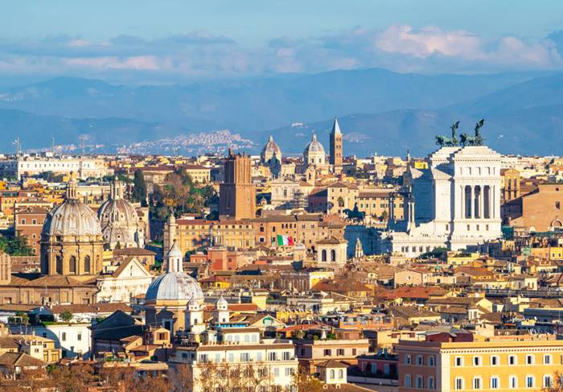

Bem-vindo à Itália
Explore a rica história, cultura fascinante e paisagens deslumbrantes da Itália. De Roma a Veneza, de Florença a Nápoles, descubra um país que cativa corações há milênios.
Explore a rica história, cultura fascinante e paisagens deslumbrantes da Itália. De Roma a Veneza, de Florença a Nápoles, descubra um país que cativa corações há milênios.